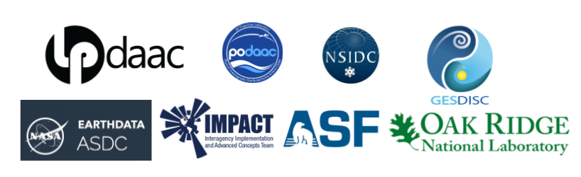

Mentors
A cross-DAAC mentor community creating & teaching resources to help researchers migrate workflows to the cloud

This cross-DAAC mentor community is creating & teaching resources to help researchers migrate workflows to the cloud. We meet and learn together, working with alignment on common needs for researchers using NASA Earthdata. Mentors receive Carpentries Instructor training and Openscapes mentorship to help you refine teaching strategies for Cloud, while collaborating on cloud tutorials to reuse rather than reinventing separately. Mentors teach and support in opportunities of different types: Hackathons, Workshops, and the Openscapes Champions program. We expect a range of technical ability and teaching experience. Through these growth opportunities within a broader community engagement approach, Mentors will also gain visibility for their work as well as for their DAACs. The expected time commitment is 3-4 days/month per year. This accounts for a minimum of 4 hours/month of synchronous calls with the rest of the time being self-directed towards improving support approaches for specific DAACs.
Current Activities
2022 goals:
- Strengthen the DAAC Mentor community of practice as they develop and teach a common set of tutorials and coordinate and lead learning events, in part through our twice monthly Openscapes Cohort Calls
- Reuse and refine shared teaching resources, share stories and lessons learned at conferences and meetups
- Lead events together (a hackathon and Champions cohort) with research teams, with Mentors assisting to support researchers and learn new modalities of support
Ongoing and Previous Activities
2021 goals:
- Build a DAAC community of practice through our twice monthly Openscapes Cohort Calls, a Carpentries Intro Python/Git Workshop, and Carpentries Instructor Training
- Develop participating teams as Mentors and help them practice teaching in a style to prepare them for a workshop at the American Geophysical Union Conference (AGU) (Dec) and the Openscapes Champions cohort with research teams (early 2022)
- Support Mentors towards establishing a common set of tutorials that they can then build off their DAAC-specific and science examples
2022 NASA Champions Cohort
This is a Cohort for research teams using NASA Earthdata and transitioning workflows to the Cloud.
2021 Cloud Hackathon
The Cloud Hackathon: Transitioning Earthdata Workflows to the Cloud is a virtual 5-day (4 hours per day) collaborative open science learning experience aimed at exploring, creating, and promoting effective cloud-based science and applications workflows using NASA Earthdata Cloud data, tools, and services (among others), in support of Earth science data processing and analysis in the era of big data. All details and tutorials are available at: https://nasa-openscapes.github.io/2021-Cloud-Hackathon/.
Mentor Cohort
The NASA Openscapes Mentors community is growing! Mentors from five DAACs continuing from 2021 are noted with an * below. We are excited to see the DAAC mentor community expand across the initial five DAACs to seven DAACS with ORNL and ASF Mentors joining us in 2022. Welcome!
Andy Barrett*
Chris Battisto
Chris is a Scientific Developer working at the Goddard Earth Sciences Data Information Services Center (GES DISC). He focuses on creating documentation and guides relating to a wide array of GES DISC user support needs, including cloud data access methods and help desk queries. Chris has a background in meteorology, and received a master’s degree in geography from Northern Illinois University in 2021.
Brandon Bottomley
Aaron Friesz*
Aaron Friesz is the Science Coordination Lead at NASA’s Land Processes Distributed Active Archive Center (LP DAAC). In his role, Aaron provides user needs insights and technical support for archive and distribution, service development, and outreach activities. He develops tutorials, scripts, and presentations that highlight the use of land remote sensing data in analysis workflows. More recently, his work has focused on advocating for the uptake of cloud computing in the land remote sensing community.
Shubhankar Gahlot
Iksha Gurung
Alexis Hunzinger*
Alexis Hunzinger is a Support Scientist at the NASA Goddard Earth Sciences Data and Information Services Center (GES DISC), focused on addressing the needs of the user community. Alexis works closely with the GES DISC User Working Group, fielding concerns and suggestions to be implemented at the DAAC. She also leads the effort at GES DISC of developing guides, tutorials, and other resources designed to educate and welcome users to the Earthdata Cloud.
Mahsa Jami
Alexander Lewandowski
Bri Lind
Bri is a Geospatial Data Scientist at NASA’s Land Processes Distributed Active Archive Center (LP DAAC). Bri is formally trained as an ecologist and remote sensing scientist and is deeply interested in facilitating the fusion of diverse remote sensing products with field data to enhance scientific insight. As a visual learner and science-oriented coder, Bri is focused on making materials that are easy to understand and likes to convert challenging concepts into flexible and easy-to-apply approaches.
Luis Lopez*
Luis Lopez is a Research Software Engineer at the National Snow and Ice Data Center (NSIDC) in Boulder, Colorado. He has helped develop tools and services to facilitate data access and discoverability across different NASA Earth missions. He is a passionate advocate of open science and has contributed to open source projects such as Apache Nutch, PyLDAVis and others. He’s always happy to help scientists find ways to make their workflows more efficient. Luis has presented his work at SciPy LATAM, PyData Global and the IEEE annual Big Data symposium.
Catalina Oaida Taglialatela*
Catalina M. OaidaTaglialatela, PhD is an Applied Science System Engineer at NASA’s JPL (and PO.DAAC), combining hydrology and Earth science domain expertise (science researcher by training) with a system engineering perspective. Focus on broadening the user base for NASA Earth observations and remote sensing data in the Cloud, and helping increase discoverability, accessibility and usability of these data for the science research and applications communities, and enabling shorter “time to science”. Reducing those barriers to science when data and services are in the cloud, while recognizing that there is a great diversity in user needs, experiences, domain expertise, access to resources - create and implement a comprehensive plan to ensure as many of these user ‘types’ are supported. Develop science use cases as training examples, leveraging open data and open science (and tools). Learning from others and co-creating.
Celia Ou
Jack McNelis*
Jack McNelis is a Science Applications Software Engineer at NASA Jet Propulsion Laboratory (and the PO.DAAC) with experience leveraging EOS data for rangeland ecosystem monitoring applications. He develops and curates metadata to describe PO.DAAC data holdings, and to better integrate them with data delivery services and end user softwares. He also develops resources for users to be better prepared to implement their analyses in the cloud.
Cassie Nickles
Dr. Nickles is an Applied Science Systems Engineer Postdoc working with the Physical Oceanography Data Active Archive Center (PO.DAAC) at NASA’s Jet Propulsion Laboratory (JPL). As an applied science researcher herself, Cassie focuses on the end-user experience working with cloud-based datasets. She writes coding tutorials in Jupyter Notebooks to help facilitate data ease of access and provide science application examples. She actively seeks ways to curate cloud data and information so that end-users from a variety of backgrounds can understand and discover their optimal cloud workflows. Cassie has research expertise in hydrologic remote sensing and graduated with a PhD in Civil Engineering from Northeastern University in 2021.
Brianna Pagán
Brianna is the Lead Development Engineer at NASA’s Goddard Earth Sciences (GES) Data and Information Services Center (DISC). In her role, Brianna guides the transition of on premise services to an entirely cloud-based infrastructure across various engineering teams. Her previous experience involves leading the research and development of remote-sensing based products, working alongside teams of geospatial scientists and developers to get services in production environments. Brianna’s research expertise is in remote sensing and eco-hydrology.
Muthukumaran Ramasubramanian
Rupesh Shrestha
Sargent Shriver
Christine Smit
Amy Steiker*
Amy Steiker is the NSIDC DAAC Data Services Engineer, specializing in the development and management of data education resources, tools, and services for NSIDC DAAC’s growing user community, as well as data transformation service development for NASA EOSDIS. She is excited to join this first Openscapes cohort to work together with our science communities to develop and sustain tooling that supports their data processing workflows as they transition to the Earthdata Cloud.
Michele Thornton
Makhan Virdi*
Makhan Virdi is the ASDC DAAC Scientist, experienced in creating geospatial tools and services for science-based analysis, visualization (UI/UX), discovery and distribution of data generated by field/laboratory observations, remote sensing, and model simulation. He is interested in AI/ML for earth science data, multi-sensor data fusion, and data analytics in the cloud. He is excited to be part of the Openscapes community, and is looking forward to learning from peers, and sharing his knowledge and skills with the community to develop and promote data science techniques, best practices, and inter-agency collaborations.
Jess Welch
Since September 2018, Dr. Jessica Nicole Welch has held a position at the ORNL DAAC, which specializes in data archive for terrestrial biogeochemistry, ecology, and environmental processes. Her work focuses on dataset curation, project coordination, and science communication. Jess holds a PhD in Conservation Biology from the Department of Ecology and Evolutionary Biology at the University of Tennessee. When she’s not working at ORNL or participating in community service, she plays Ultimate with her friends.
Past Participants
Jennifer Adams
Vishal Bagadia
Vishal Bagadia is a data science analyst working on contract at the Atmospheric Science Data Center DAAC, NASA Langley Research Center. His experience in exploring emissions retrievals from satellite missions and guiding science teams during the development of their research products powers his work on addressing data interoperability concerns and being responsive to user’s engagement with the archived data. He is energized in leveraging emerging, free, and open-source technologies to better represent and visualize large datasets, building web applications to meet user’s data transformation and accessibility needs, and ultimately producing sustainable solutions to meet end-user requirements as data moves into the cloud.
Cole Krehbiel
Cole Krehbiel is a remote sensing data scientist working as a contractor to NASA’s Land Processes Distributed Active Archive Center (LP DAAC). He is interested in improving access to geospatial data for diverse user communities. Cole supports missions archived and distributed by the LP DAAC including MODIS, VIIRS, ASTER, ECOSTRESS, and GEDI by creating Python tutorials and data prep scripts and providing workshops and webinars to facilitate community uptake and understanding of those missions.
Paul Moth
Paul Moth is a Data Support Specialist at the National Snow and Ice Data Center Distributed Active Archive Center (NSIDC DAAC). He is part of the User Services team and currently represents MODIS, VIIRS, SMAP, High Mountain Asia, and Nimbus missions at NSIDC DAAC. He is interested in working with early adopters and science team members and gathering feedback that identifies the key operations/steps/workflows that would be most important for creating tutorials and educational materials.
Matt Tisdale
Matt Tisdale is a data scientist working at the NASA Atmospheric Science Data Center (ASDC). He is interested in improving access to ASDC satellite and airborne data products. He uses ArcGIS, OPeNDAP, Python, and Jupyter notebooks to show users how to obtain and analyze data from ASDC. I am interested in learning more cloud analysis techniques to share with our user base as more and more of our ASDC data products are migrated to the cloud.